Guía
Nivel de dificultad
⭐
fácil: puede implementarlo sin conocimientos⭐⭐
medio: puede implementarlo con algunos conocimientos⭐⭐⭐
moderado: se necesitan conocimientos moderados⭐⭐⭐⭐
difícil: se requieren conocimientos y autorizacion⭐⭐⭐⭐⭐
yonkou: se requiere experiencia y aun asi puede resultar como solucion temporal
Guías básicas
Insertar role ec2_dev_role ⭐⭐
Insertar role
Nos dirigimos al teams y desde archivos del grupo DevSecOps vamos a la pestaña Files y nos dirigimos a la ruta del script y json:
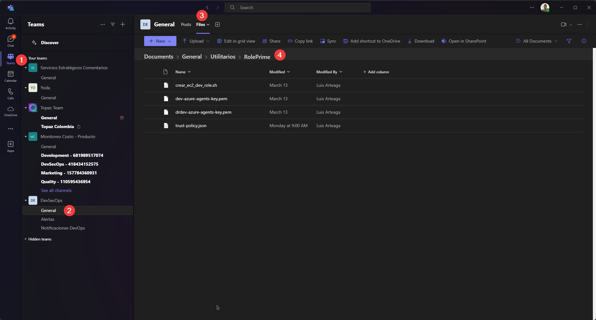 Seleccionamos y descargamos.
Vamos a la ruta donde se descargaron los archivos y abrimos un bash en su ruta:
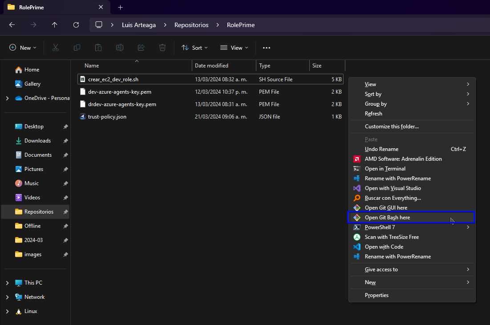 ejecutamos el sh:
./crear_ec2_dev_role.sh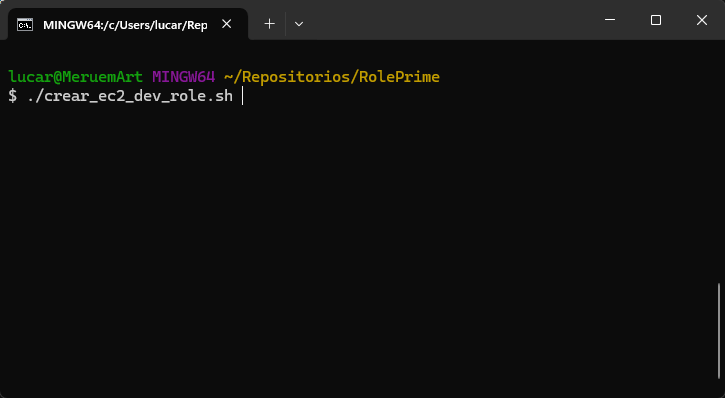 Y listo, si se realizo todo correcto creara un json de la politica y lanzara un mensaje de Rol y política creados exitosamente.
{kind=link}
{kind=link}
{kind=link}
Obtener credenciales AWS ⭐
Obtener credenciales
Inicia el AWS portal y selecciona la cuenta a la que deseas acceder, dale clic en Access keys:
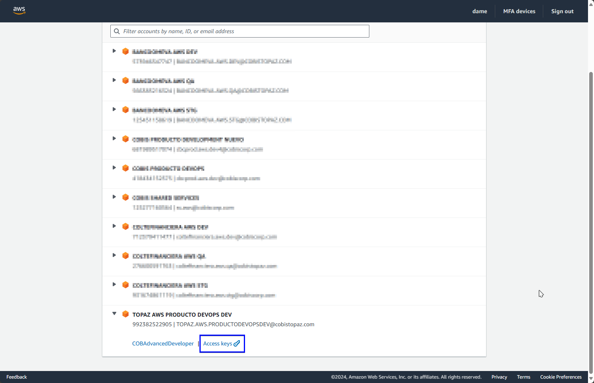 Utilizaremos la
Option 2: Add a profile to your AWS credentials filedamos clic en Copy: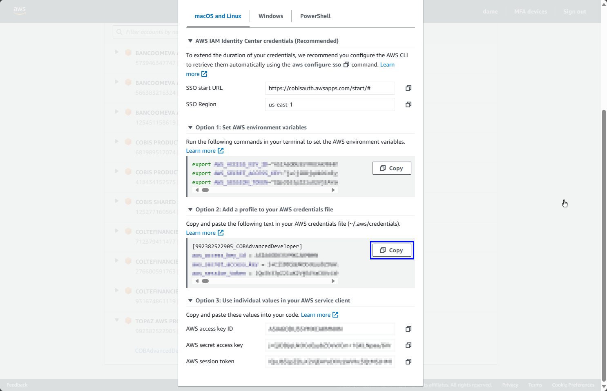 Presionamos Inicio + R o buscamos Ejecutar en el menu de inicio.
introducimos la siguiente ruta:
%USERPROFILE%\.aws\credentials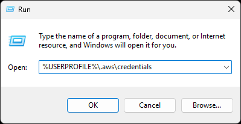 una vez abierto elegimos el editor de texto de preferencia, pegamos lo copiado reemplazando la primera linea por
[default]: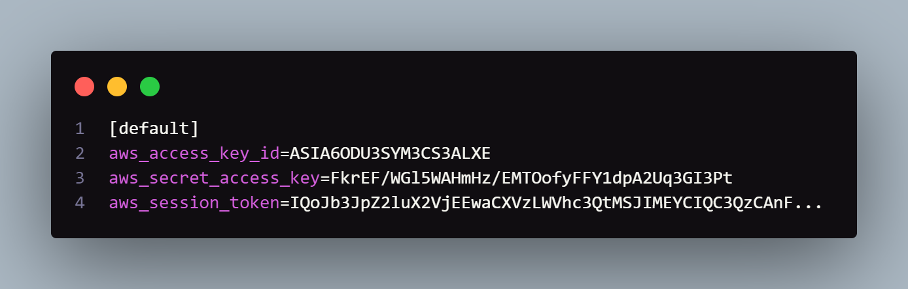
{kind=link}
{kind=link}
{kind=link}
Crear instancia ⭐
Crear instancia
Inicia el AWS portal y selecciona la cuenta a la que deseas acceder, dale clic en el tu Rol:
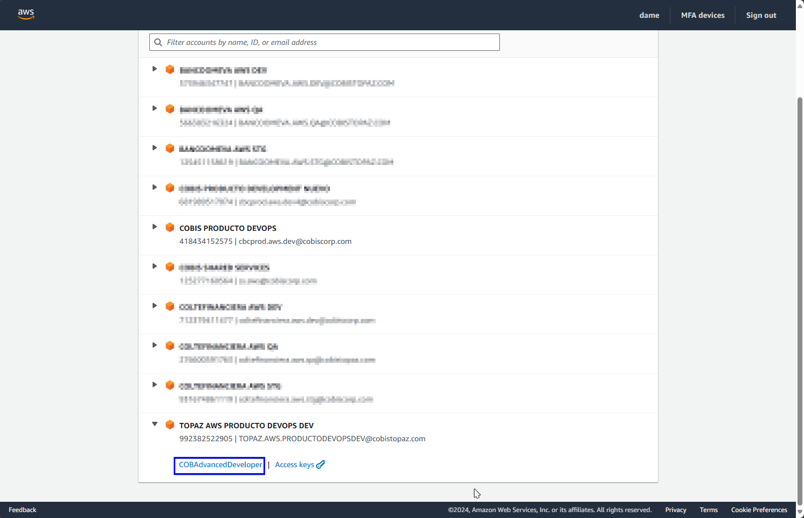 Nos dirigimos al servicio de EC2 y damos clic en Launch Instance:

Aqui aprovechamos que viene por defecto en la ami recomendada y tipo de instancia recomendada para el procedimiento.
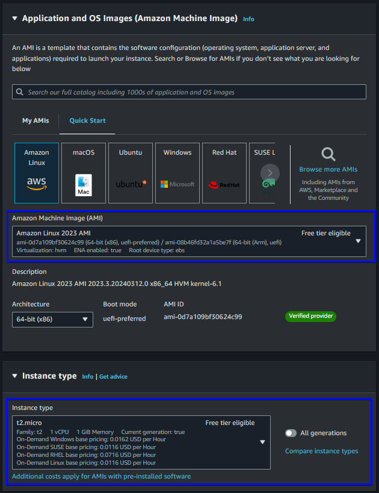 configuramos en una subred publica y permitimos que se le auto asigne una ip publica:
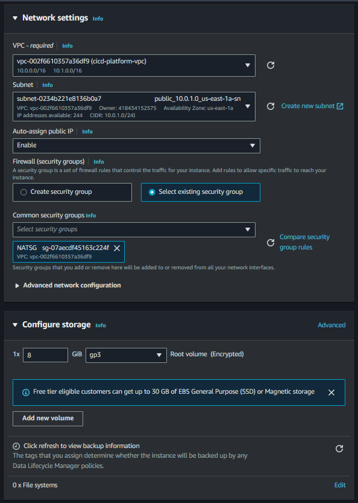 ahora le podemos dar clic en Launch Instance y esperamos unos 5 minutos que se cargue la instancia recién creada:
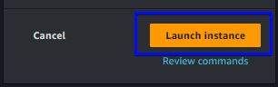
{kind=link}
{kind=link}
{kind=link}
{kind=link}
AMI's con packer
Packer es una herramienta de código abierto desarrollada por HashiCorp que se utiliza para automatizar la creación de imágenes de máquina en múltiples plataformas de nube, incluyendo AWS (Amazon Web Services). Con Packer, puedes definir y configurar tus imágenes de máquina en un formato legible para máquinas, y luego construir automáticamente AMIs utilizando estas definiciones.
Crear AMI's ⭐⭐⭐
Crear AMI
Inicia la terminal de tu pc en mi caso fue PowerShell de windows:
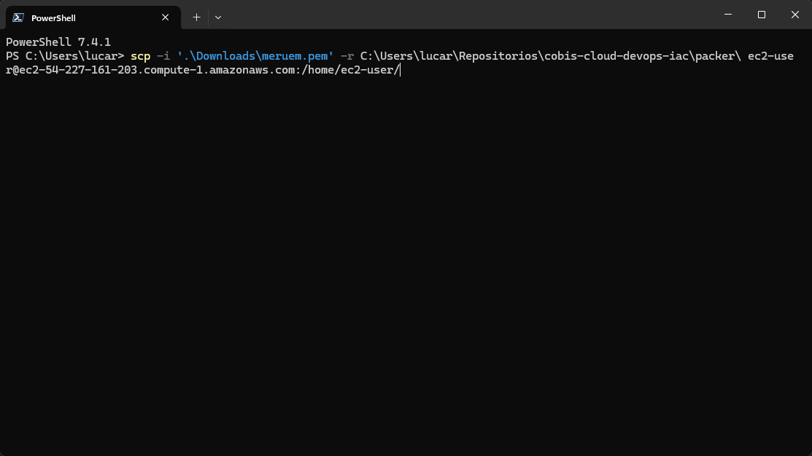 scp -i '.\Downloads\meruem.pem' -r C:\Users\USERPROFILE\Repositorios\cobis-cloud-devops-iac\packer\ ec2-user@ec2-34-230-91-144.compute-1.amazonaws.com:/home/ec2-user/con lo anterior ya tenemos los recursos que necesitamos
y procedemos a conectarnos mediante ssh como se muestra a continuacion:
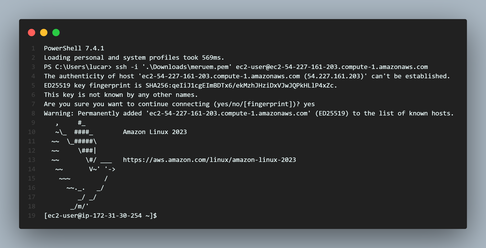 ahora instalamos packer.
sudo yum install -y yum-utils shadow-utils sudo yum-config-manager --add-repo https://rpm.releases.hashicorp.com/AmazonLinux/hashicorp.repo sudo yum -y install packer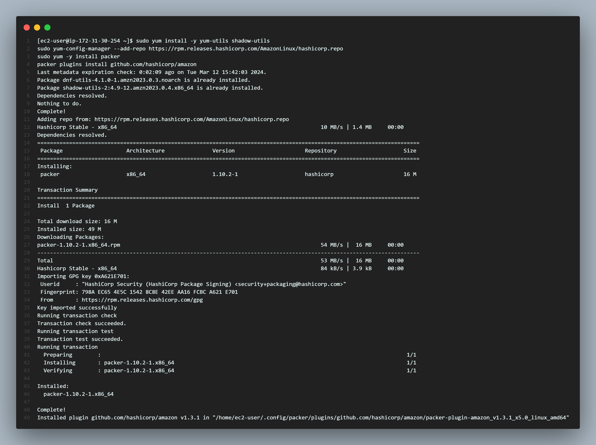 entramos a la ruta de packer que subimos a la instancia e inyectamos credenciales Elegimos el paso 1 en vez del 2:
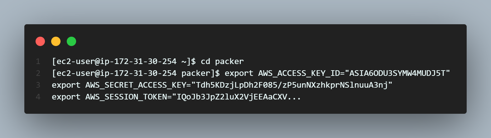 el paso que falta es crear el ami:
packer build ami-azure-devops-agents-x86.jsonpacker build ami-azure-devops-agents-arm64.json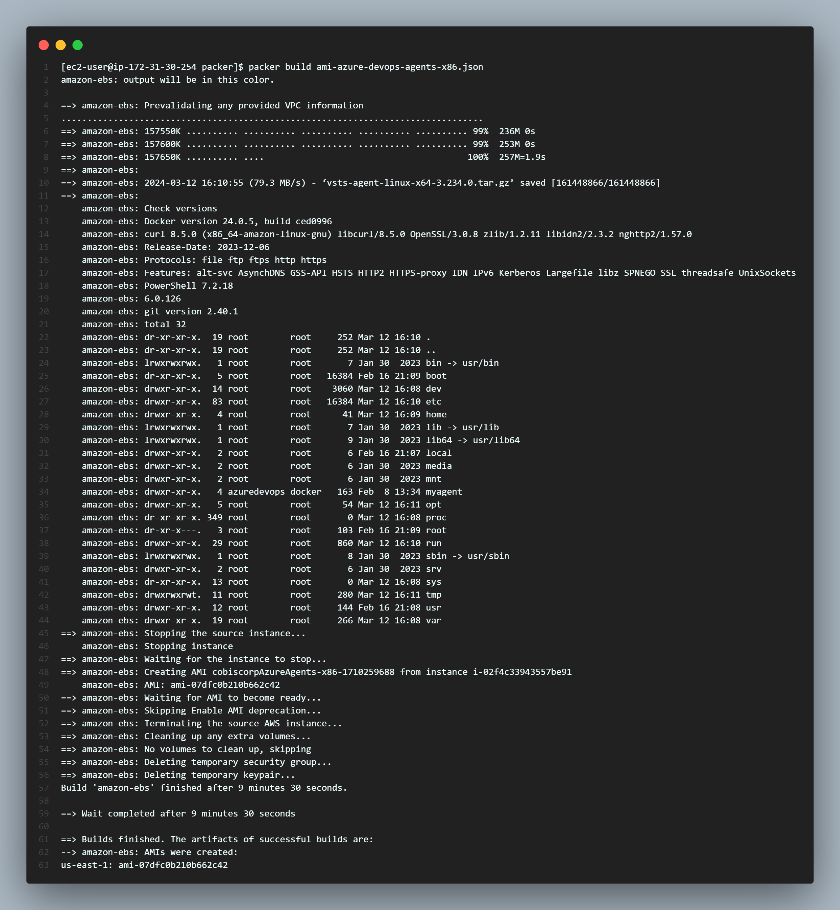
{kind=link}
{kind=link}
{kind=link}
{kind=link}
{kind=link}